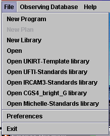

| UKIRT OBSERVING PREPARATION |

|
This document describes the preparation
of UKIRT observations under the UKIRT Observing Tool.
It assumes that you have already downloaded and installed the software
(see our
download page - make sure you have
downloaded the latest version!). Of course if you are using a JAC, UKIRT
or JCMT machine, the software is already installed. Email
ukirtot@jach.hawaii.edu with questions
or problems
This guide is intended to be relatively complete without
going into the details of the science libraries on which
most observing is based. Those details can be found elsewhere
(in the libraries themselves and on the instrument
web pages (http://www.jach.hawaii.edu/JACpublic/UKIRT/instruments/).
The topics covered apply equally whether you are preparing observations
remotely or at the Observatory. We suggest you read through sequentially,
following the tours as they come up.
We recommend that you use the online version of this document, stored
on the UKIRT web pages (http://www.jach.hawaii.edu/JAC/software/ukirtot)
If, instead, you are reading these notes within the OT's own help system,
be aware that the web version may be more up to date, and that external
links will not be accessible. Also, the native java browser is not as
user-friendly as Netscape, Mozilla or IE.
Finally - please also be sure to read the list of known issues with
the current release.
I. Introduction
II. The Observing Tool
 Startup screens
Startup screens
The science program window [tour]
 The Template Library [tour]
The Template Library [tour]
Minimum schedulable blocks
Science Program Elements
Inheritance
Administrative components
 Scheduling constraints
Scheduling constraints
Site quality constraints
Using inheritance with administrative
components
Example - a complete science program [tour]
Use of the Position Editor [tour]
A note on guide stars and acquisition scenarios
IMPORTANT - Program Documentation
CHECKLIST - what to look for in a typical
program
Estimates of execution time
III. Advanced Topics and Usage Notes
Programs with logic: AND and OR Folders
Drag and Drop
Generating a program from a single MSB
and a catalogue on file
Importing ORAC-Classic programs
IV. Release-specific
notes
Known bugs
I. Introduction
The central
system in UKIRT Observing is a database of observations, held
at the summit of Mauna Kea. Observations are prepared using
the Observing Tool. The science program is stored on disk locally
to the observer (who can be anywhere in the world), and once complete,
submitted into the summit database. The observer at the
summit uses a database query tool to sort and extract observations
to be done; details of execution are instrument-specific and
we do not discuss them here. Once you are familiar with the information
here, please consult the instrument
pages on the UKIRT home page for information specific to the
instrument required by your program. You will also need to get a password
for your database area, from the Password Server.
Your program id is u/03a/n where n is the id number of your PATT proposal.
Note to 03A PIs: this is the
first semester of flexing at UKIRT, and we will necessarily be feeling
our way to some extent. However, some requirements are clear already;
for example, we ask that you abide by the "latest submission date"
which we will send you shortly, because a key to the success of this
process will be that workable, well-documented MSBs are in the database
and ready for execution as early as possible, particularly for those
programs which have strict weather requirements.
II. The Observing
Tool
Startup screens
The observing tool is used to fully specify observations
to be carried out at the telescope. You can download
it from the "Observing at UKIRT" pages on the UKIRT Home Page (Linux,
Solaris and Windows versions are available). We suggest that users
at Starlink sites request their site manager to install a single, system-wide
copy. When you run the OT (on UNIX, type ukirtot
in an xterm) you will see a splash screen which gives authorship
etc.; dismiss this and you will be left with the OT main
window:
When starting afresh, most of the useful actions reside
under the
"file" menu.
File menu Item
|
Function
|
New Program
|
Creates a new science
program. This is the first thing you'll do when starting from
scratch.
|
New Library
|
Ignore this; it is
for JAC staff use only.
|
Open
|
Read in a science
program file stored locally on disk. Initially, your science
program will be stored locally; only when it is complete and
validated will you submit to the database.
|
Open...library
|
These five entries
pop open windows onto the UKIRT libraries which store recommended
sequences and standard stars.
|
Which File Menu?
A word of caution - both the File
menus and the Database menus differ between the
OT main window and the Science Program window. Here are the respective
file menus:
OT main window file menu
|
Science Program file menu
|

|

|
So note that (sensibly, given the
ability to have more than one science program open at a time) the
file menu which contains "Save" and "Save as..." is the one
on the Science Program window. Similarly, the Database menu on
the OT main window contains only "Fetch", while the Database menu
on the Science Program window contains only "Store".
Tour: the Science Program window
Click on
"New
Program" to create a new program. This produces a window
like the following (click on the image for a description
of the various component parts). The main areas are
- the menu and general tool
bars at the top
- the component tool bar down
the lefthand side
- the program display panel in
the middle
- the editor panel on the right
Initially, the only thing in your program panel is a "Science
Program" line. You will add to the program later. For now, take
the time to fill in its details in the Science Program editor panel
on the right. The most important field here is the Project ID field.
You have to get this right, or you will not be able to submit your
program to the summit database. Your project ID was assigned when
you submitted your proposal for telescope time. It is of the
form u/03a/ followed by a proposal number. You can also
find your proposal number in our web page of time allocations. Finally,
note that the program itself calculates an estimate of the total
time required and displays this in the administration panel.
Tour: The UKIRT Template Library
While it is possible to build up observing
sequences from scratch, it is much quicker and less
error-prone to adapt one of the many "library sequences"
found in the UKIRT template library , which is fifth
on the list in the file menu. The template library window
looks like this, with all the libraries in their initial non-expanded
state. Click on the image for a short tour of the library contents:

Typically, setting
up your UKIRT program involves opening the appropriate
library, finding within it a sequence which matches your requirements,
and copy/pasting it into your new science program; then you are
in a position to alter instrument configurations, target lists and to
fully document the program for the observer's benefit. Refer back to
the
Science program
window tour for the locations of the cut, copy and paste
buttons (or look at the figure above, where you'll see three buttons
starting with the scissors). An example of a more complete science
program is given below, but first we'll introduce some of the essential
building blocks.
Minimum Schedulable
Blocks
The
basic quantum of observing, both in classical and flexible scheduling
(though more natural to think of in flexing), is the "minimum
schedulable block". This is the smallest part of the program
which is complete, fully-reducible and thus stands alone. In
most cases, an MSB will be executed at the telescope in its
entirety. For example, a target observation would be incomplete
without suitable calibrations, and so one might define the
smallest spectroscopic MSB as comprising the spectrum of a target, combined
with sufficient flats, arcs and a standard star to be fully reducible.
For efficiency, the observing system at the summit allows the
observer to skip calibrations if not required (e.g. if executing
a number of similar MSBs which can share the calibration). Note
that the UKIRT template library contains MSBs, not just Observations,
so you will naturally be building up from these.
You should aim
to produce a science program consisting of suitably-titled
MSBs. The title will appear in the query tool when observing
at the telescope, so try to make your titles as descriptive
as possible.
Science program elements
MSBs within your science program specify observing conditions,
instrument configurations, telescope offset sequences and data
reduction recipes for all the observations you have been given
time to carry out. They do this through combinations of the following
elements:
Program icon
|
Designated
item
|

|
An "Observation" (e.g. of a target
or a standard star)
|

|
A "Component" - in this case an Instrument
component. These are used to "set scenes" (in the illustrated case,
one or more instrument configurations which will apply within
an Observation).
|

|
A "Sequence" - this contains the
actions undertaken in an Observation - for example, offsetting
the telescope and taking data at each offset point. If you omit a
Sequence, no amount of configuration components will cause anything
to actually happen at the telescope.
|

|
An "Iterator" - these cause either
the instrument, or the telescope, to loop through a series of
different configurations (in the case of the telescope, the loop
is through Offset positions). Everything inside the iterator is repeated
for each of its settings.
|

|
An "Observe" - Each Observe causes one
data file to be produced. If there's no Observe in your sequence, the
telescope may well offset and the instrument may well set to a configuration,
but no data will result.
|
To read a science program you have
to understand its hierarchy. An example:
|
|
Here, everything
is more indented than the Science Program icon, therefore everything
is part of the Science Program. By contrast, the two "dry
target" MSBs are at the same indent
level, so none is part of any of the others. The second
MSB is not "expanded" - its contents
are hidden pending a click on the lever to its left.
Within the first MSB,
and hence indented further, is an Observation, which itself contains
a Target component, an Instrument
component and a Sequence (all three of these are at the
same indent relative to the Observation).
The sequence in turn contains an offset iterator which "contains" an Observe. Recall that the Sequence is just a formality, indicating
that everything within it is executable. The Iterator, however, is a loop - everything
within it (usually but not always this is just an Observe) is done
for every setting of the telescope offset iterator.
When executed at the telescope, this particular
Observation sets the instrument up, moves to a target, then
takes data frames at each position of an offset pattern.
|
Inheritance
The
observing tool allows MSBs to inherit properties from the
environment they find themselves in. For example, if a site
quality component is present at the top of a science program
(as in the example above), then none of the MSBs within the program
need to have a site-quality component of their own; they inherit
it from this global one. Conversely, a site-quality component
within an MSB "trumps" such a global component. This also applies
to Target components; a target given at the top of an MSB, outside the
scope of Flat, Standard and Object Observations, will apply to all three
(so when the flat/arc observation is run, the telescope will slew to
your science target). This may or may not be what you intend; check
the logic carefully (obviously in this example you would also want to override
the global target in the standard-star Observation).
Administrative
components: Scheduling and Site Quality
Scheduling constraints
The scheduling constraint component allows you to determine
the scheduling of observing within your program by specifying both a
range of dates and an elevation limit. Click the image below
for more information on the scheduling component's editor panel.

Site Quality
Four constraints relating to site quality
can also be specified by making the appropriate selections
in the site quality component. Click the image below for more
information on the Site Quality component's editor panel.

Using inheritance with the administrative
components
The majority of programs will require
the same site quality and scheduling settings for all MSBs.
In those cases, the inheritance mechanism can be used to avoid having
to copy these components into every MSB.

|
In this (schematic
and incomplete) example, the site quality component at the top
applies to the three MSBs which don't have their own; only "wet
target" overrides this global component.
|
Tour: A more complete
science program
The figure below shows a science program
which is fairly straightforward and a reasonable approximation
to what one might expect to have to set up for either
classical or flexible observing. There are ways to give programs
"Logic" (different combinations of MSBs, etc.) - these are discussed
in "Advanced Topics" at the end of this document, and your support
scientist will be happy to help with questions in this area. Most programs
will not need to use this type of logic, and supplying a flat set of
MSBs as in this example will be fine.
Tour: Using the Position Editor
The position editor is used to set up guide
stars, science field orientations (slit angles etc.) and display
catalogues of sources in the field of your observations.
It is started up either by clicking the "plot" button in the target
component page, or by clicking the "image" button on the main toolbar, as
described in the
tour of
the science program window, above. Click on the image below
to take a tour of the position editor's facilities.
By default the position
editor loads images from the digitized sky survey. However
it can also load any FITS image with an appropriate WCS, from the
File menu; this has entries for either files on disk,
or URLs which point to fits files. Two technical notes if
you are planning on generating your own image for import:
Firstly, if you want to import a SCUBA map in NDF format, convert
it to FITS by using the starlink convert utility with the
following arguments:
convert
ndf2fits encoding=FITS-IRAF bitpix=32 comp=D
Secondly, there is
a bug (possibly in JSky itself) which we have not been
able to fix at the time of writing. If you read in an image
that is not exactly centered at the co-ordinates in the target
component, the cross-hair icon may be incorrectly positioned.
This problem fixes itself at the next redraw. To force a
redraw you can briefly zoom out and back in again using the buttons
introduced during the tour of the position editor.
Notes
on guide stars and acquisition scenarios
Your guide star may be chosen from plate material which
is many years old, and even if more recent it may have surprisingly
poor positional accuracy (Guide Star Catalogue sources for instance
can have systematic errors of up to two arcseconds depending on their
location). In these cases, the details of how you centre on your source
and guide star can be important depending on your mode of
observing, slit width etc.
CGS4
We have a set of recommended methods; CGS4-specific
details are given
here, and a more general flowchart for acquisition
modes is given
here (the
latter two links are available only through the online version of
this page, referred to at the top of the document). You should identify
in an observation Note which of the scenarios identified in the
flowchart applies.
For example, if you are observing
with CGS4, and neither your guide star nor your target have
accurate positions, but the relative offset between them is accurate,
then you should identify
"S15" as the acquisition scenario (in all
cases you should assume that the aperture position is known
or has been recently determined).
For UIST, acquisition is via the imaging
mode and peakup is not in general necessary. More details of this
process are given in the
UIST
Acquisition page on the UIST home page; the UIST Spectroscopy
templates include the acquisition sequences described there.
To help centring guide stars, the pick object option under Catalogs in the position editor is useful compared
to positioning the cursor over the star and clicking. In general, stars selected
this way come up relatively well centered and require little adjustment of
the crosshead or telescope. This speeds observing still further and is particularly
helpful for blind pointing to objects with good coordinates.
IRPOL
Polarimetry users should also be aware that
the waveplate holder blocks much of the available field of view
for off-axis guide stars, as described in the
IRPOL user
manual.
IMPORTANT - Program Documentation
There are two levels at which you must
document your program's MSBs. These are (i) notes which the observer will
see (one is allowed per MSB) and (ii) notes which the support scientist
will use to vet the program. We do not expect summit observers to access
your program in the OT to find out what you're trying to do; instead,
your MSBs, individually, can each contain one note (flagged as "show
to Observer") which will pop up on the QT screen at the summit. These
notes should clearly contain rather generic information about the program
as a whole, plus any specific items for this particular MSB; the following
table gives examples of the two types of information.
Strategic part
|
This program does spectroscopy
of both faint and bright emission knots in galaxies, looking for
good detections of line strengths in emission. Standard ABBA jitters
are used. It is more important to this program that you get to all
the targets, than ensure detection of each of them. So, spend an hour
on each target unless the lines come in quickly (S/N of 10 would do);
if nothing after 1 hour don't waste any more of my allocated time, just
move on to the next source (unless you believe there is evidence that my
conditions constraints are too relaxed, in which case please let the support
astronomer know). If you do see a line, stay on it as long as is necessary
(within reason) to get a good detection.
|
MSB-specific part
|
I'm not sure how bright the
lines in this particular target are, but there's a chance that the
exposure time I've given is too long. Please watch for saturation in
the line peaks and reduce exposure time if necessary.
|
You would place this Observer note in each of your MSBs,
with only the MSB-specific part changing from one to the next.
CHECKLIST - What to
look out for in a Typical Program
Within a typical MSB, you should be attempting to ensure
that:
- The
MSB's contents represent a complete, calibratable
observation of a science target. In general this means that all
MSBs must contain Observations of a Standard Star, though these
observations can be flagged as Optional (as described previously)
to allow the observer to skip them if they are sure that a suitable
standard already exists. Note that time observing standards from
your MSBs is charged to your program, so it makes sense
to use this flag !
- The MSB is well-documented.
This means that you have used both informative notes within the
details of the Observations, plus "Show to Observer" notes which
will give the observer a summary of what you expect. The JAC will
arrange a web page with some typical data in your observing mode, but
you should be as clear as possible in the notes which pop up for observers
what your expectations are and whatever issues you foresee. Your
support astronomer will vet your program as it enters the database,
and will veto your observations if they are insufficiently well-documented.
- Instrument components
are consistent from observation to observation within
the MSB (this is usually, though not always, the intention). Note
that for CGS4, the instrument component is global to the MSB (see
"Inheritance") and so does not need to be copied into each Observation.
For UIST, the instrument component is present in each Observation
(this is due to a technical limitation which we are working to remove)
and each has to be consistent (exception: the Acquisition Observation).
- flats and arcs, if present, have
all had their settings set to the default for
the instrument configuration chosen (beware of making a small change,
for example altering a slit width, and finding that your flats are overexposed).
- darks,
if present, have had their settings set to the detault for the
instrument configuration chosen. For example, a change in the estimated
magnitude of an imaging standard can change the exposure time and
this must be reflected in the dark.
- target
list components have been set up, with guide
stars in the case of faint objects
The best way to do this is to set up one MSB, adhering
to the guidelines above, and use the validation button to check
it. This will pick up common faults like dark exposures being inconsistent.
If you're still uncertain, your support scientist is available to
help with queries. Then (depending on the details of your program)
you may be able to just copy/paste the MSB and edit target and instrument
components to generate the rest.
On completion of the program
(and in general it's also wise to do this as you go along),
click
file...save in the program window, and save the
program to an xml file (name it
<whatever>.xml ;
note that if you want the .xml suffix then you have to type it). To
store to the summit database, click
database...store on the
program window and enter your project password, which you can obtain
from the
UKIRT
password server. Once in the database, your support scientist will vet
the program, using a checklist which covers the issues above. Check
here
for the current vetting checklist.
Tip: while editing your science program,
its title is displayed in italics, but it switches to normal font upon
saving. When you edit any component of your Science Program its
title changes font to indicate that you need to save your work.
Estimates of Execution Time
Your program builds up its total estimated
elapsed time in stages.
-
Observes can be set to a number of
repeats; generally this is one for UKIRT instruments such
as Michelle and UIST.
 Repeat iterators specify the
number of times the Observes within them are carried
out.
Repeat iterators specify the
number of times the Observes within them are carried
out.
-
Observations show you the estimated
time of the sequence they contain.
-
MSBs give you the estimated time
of the Observations they contain - in this case the
science observation plus any calibrations observation.
To be clear: this is the estimated time of that single MSB.
 Science Programs give you the estimated
time of all MSBs they contain, including the number of
repeats. So if you have a 1hr MSB and you set the MSB counter
to 2, your MSB estimated time will be 1hr and your Science
Program time will show 2hrs.
Science Programs give you the estimated
time of all MSBs they contain, including the number of
repeats. So if you have a 1hr MSB and you set the MSB counter
to 2, your MSB estimated time will be 1hr and your Science
Program time will show 2hrs.
III. Advanced
Topics and Usage Notes
Here we outline some facilities which are
either more advanced than a typical program is likely to require,
or more than the beginner user might expect to use.
AND and OR logic
Most programs will be catered for by simply
creating a set of MSBs and at most specifying their relative priorities
and perhaps some scheduling information. However, more complex programs
can be built up using the logic provided by "AND" and "OR" folders.
The basic function of these folders is as follows:

|
Allows you to select one
or more (default is one) MSBs from a list. If the default is used,
then once an MSB from the folder has been done, the rest are marked
as unavailable.
|

|
Allows you to simply group
MSBs together. In general, ANDs make most sense when contained within
an OR folder, allowing you to have two completely separate programs
(potentially with many MSBs each), only one of which gets done. For
example, you may have a set of targets in two separate star-forming
regions, don't need data in both but do need one region to be completed.
ANDs inside an OR is the way to do this.
|
An example of the use of these folders:

|
Here, for the sake of illustration,
a PI has managed to convince the TAG that there is merit in granting
time to two rather different projects under the same banner. The
resulting science program contains two OR folders. These do not interact
with one another; completing the first OR doesn't mean that the second
OR (which is at the same indent level) does not get done. All being well,
the PI will obtain data on both sub-projects; the details of what they
get is catered for by the AND and OR logic.
Within the (simpler) second
OR folder, the PI has asked for two out of three MSBs to
be done. Depending on the timing, these could be Oph-elias 29 and
Oph-BK44, or some other pair from the three. The important point is
that once two are done, the third is marked as unavailable. Selection
of the number to do is done in the OR folder's window.
Within the first OR folder,
the PI has required only one of three things to happen: either (i)
the single MSB on NGC4594 knot 3, or (ii) one of the two programs
on knots in NGC4565 or NGC4321. So the minute an MSB from the NGC4565
program is done, both the NGC4594 single MSB and the NGC4321 program
is marked as invalid.
|
Formally:
ANDs were designed specifically to go inside ORs (to allow you to group
MSBs) but are also available to group MSBs in general (to allow them to
share instrument configs etc).
| Folder type |
Can contain |
|
|
ANDs, MSBs, Observations or general components (inheritance
works in an OR folder) |
|
|
Anything except an OR or AND |
Drag and drop
Components, observations and entire MSBs
can be dragged from place to place, though many users will
find the cut and paste described above quite usable. Drag
and drop works in much the same way as it does in most graphical
user interfaces, but note the following points of protocol:
- press ctrl during (after commencing)
a drag and the move becomes a copy. Note again that
the key press has to happen after you commence dragging
the object.
- click on one
object, then hold down shift
and click on a second; everything between the first and second
inclusive become selected.
What happens when you drop a dragged item is indicated
by an arrow symbol:

|
Dropping a dragged item (for
example, a target component) with the arrow pointing diagonally means
that it is dropped at one indent level higher than, and therefore becomes
a part of, the highlighted item (in this case, the MSB).
|

|
Dropping a dragged item (for
example, an Observation) with the arrow pointing vertically down means
that it is inserted into the science program at the same indent level
as the highlighted item (in this case, the MSB).
|
You can control which of the symbols you get
by horizontal movements of the dragging cursor; in the above example,
you would find that the symbol changed as the cursor was dragged past
the "B" in "MSB Folder (1X)".
Generating a Program
from a Single MSB and a Catalogue on File
If you have many sources which you wish to observe in
a similar way and do not wish to go through the rigmarole of editing
a target component for each one, there is a way to generate a science
program from a template MSB and a text (ASCII) catalog file. This
uses a service at the JAC site - so you need an internet connection
to do this.
Start with a science program which contains a template MSB with a blank
target component (for example, a template MSB you have retrieved
from the SCUBA library). Your catalog file should be of the format:
PKS0106 01 08 38.771 + 01 35 00.32 RJ
3C84 03 19 48.160 + 41 30 42.10 RJ
3C120 04 33 11.096 + 05 21 15.62 RJ
PKS0438 04 40 17.180 - 43 33 08.60 RJ
The catalog format is not blank space sensitive - if
you have existing catalogues compatible with the JCMT sourceplot
package, they will work as is, provided they do not contain
planets or objects with orbital elements.
Under the edit menu (in the Science Program window), there is an option
called "Replicate from catalog". Choose this action and you will
be asked for the location of the catalog file. Once you have done
this, the OT will contact our site and after a short delay will pop
up a new science program window containing multiple MSBs. So if you
had an MSB with one blank target component and a catalog file with
12 sources, you will get back a science program with 12 MSBs, whose target
components have been filled in using the information from your catalog.
Of course you should tweak the MSBs further, such as giving them more
informative titles and tweaking the number of integrations on each
source.
Importing
ORAC-Classic Programs
If you have science programs prepared within the ORAC
OT (i.e. before Semester 02B), you can import them into the OMP by
following these steps:
Save your old-style
program onto an sgml file
- run the old ORAC OT (oracot3n)
- load your science program from the orac database
- file...save the program as an sgml file
- exit the old OT.
Read the file
into the new OT, and copy observations into MSBs
- run the new OT (ukirtot)
- file...open, select "sgml" files and load
the sgml file saved above
- file...new program to open a new
program window
- create MSBs in the new window
- copy observations from the sgml file window into
MSBs in the new program
- make sure you provide sufficient site quality
and scheduling components
- file...save the new program as an xml file
- database...store the new program
The above procedure, and
in particular the action of copying old-style observations
into MSBs, causes the observation components to develop a "Flag
as Optional" tick box.
IV. Release-Specific Notes
Known Bugs
| Memory Leak |
There is a known memory leak which causes the OT to
crash; you can exercise this leak by repeatedly opening windows such
as the Template Library, Position Editor etc. This can cause a crash
at what appears to be a random time, the symptoms of the crash being that
the OT runs progressively more slowly (as your computer runs out of memory)
and eventually simply hangs up. Other hints that you are sailing close
to the wind may include a failure to update the position-editor display.
If you let this go on and end up in the hung state, ctrl-c on the
launching xterm, or killing the process leader (under UNIX) is the only
way out, and any edits made since the last file...save are lost. We advise
you to save your work on the local file regularly, and if you believe you
detect the above symptoms just save your work, exit the OT and restart it.
Work is in progress on provision of automatic file backups. In
the meantime, to minimize the chance of this problem occurring, we
suggest (i) do not close the position editor every time you have completed
setting up each object; it will display subsequent fields perfectly well
without being restarted; (ii) keep the UKIRT template library (and
any other libraries) open throughout your session.
|
Document date: 23-Jul-2002
Document Author: Andy Adamson,
Frossie Economou
Last modification date: 13-Jan-2002
Last modification Author: Andy Adamson